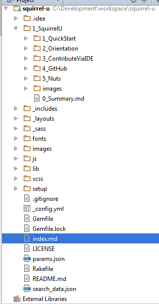
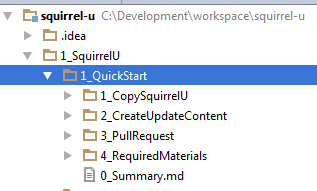
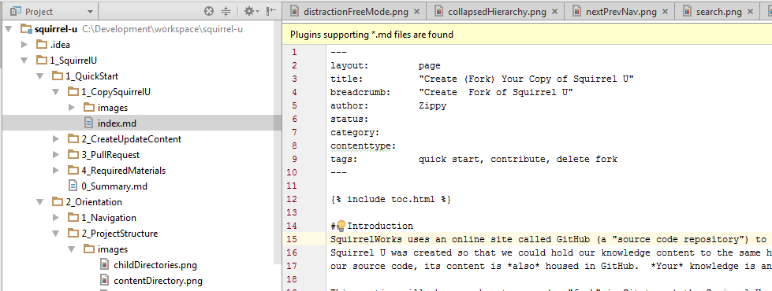
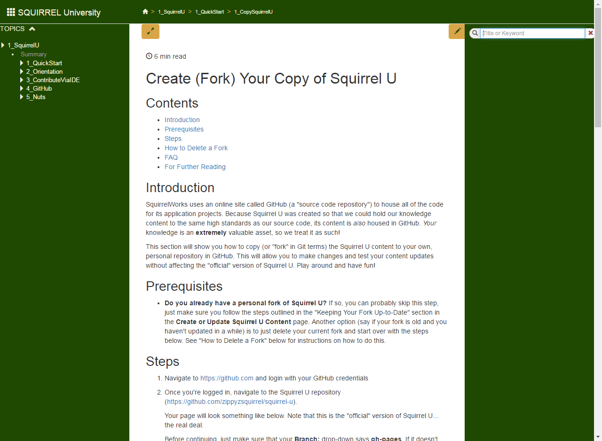

Contents
- Introduction
- Prerequisites
- Directory and File Structure
- Standards
- _config.yml
- Permalink: pretty Option
- For Further Reading
Introduction
This section dives into the file and directory content of Squirrel U Git Project.
Prerequisites
- If you want to view Squirrel U's project structure for yourself, you'll need access to GitHub.
Directory and File Structure
There are two ways in which Jekyll is typically used:
- Posts - this is a flattened, time-based organization of content for blogging
- Pages - useful for arranging content into some other form of hierarchy
We are using Jekyll's "pages" concept, arranging content into a taxonomy of folders and pages.
At the very top of the hierarchy, there is an index.md file. This is the first page that gets loaded when you visit the site. This file contains links to commonly referenced paths in the site. Alongside is a collection of nested topic directories.

Navigation Directories
Within each of these 5 highest topic directories, there are a varying number of sub-directories we refer to as "summary directories". Each directory contains, at
the very least, a 0_Summary.md file. This summary file typically doesn't contain a lot of actual content other than perhaps some overview dialogue and an automated list of the subdirectories contained within ("navigation").
Note that this summary file is required in order to generate the content navigation as outlined below.
Rendered in Squirrel U:

Content Directories
At the lowest levels of the hierarchy are "content directories". These directories typically contain the "meat" of Squirrel U, with all of the reading material, examples, videos and images that cover a particular topic. Again, at a minimum, each of these directories contains an index.md file containing the content itself. Other, supplemental directories may also be included such as an images folder, a folder containing code examples, etc.
Note that each directory contains an index.md file. This is required in order to generate the content navigation as outlined below.

Rendered in Squirrel U:

Standards
As mentioned throughout this section, at a minimum every section directory must include a 0_Summary.md file and every Markdown file must contain Front Matter. This is so that automatic hierarchy and content navigation can be generated. If there is any supplementary content to be included within the 0_Summary.md file, it should be contained in peer directories as outlined below:
- Images should be in a peer directory called "images"
- Code examples (JavaScript, HTML, etc.) should be in a peer directory called "code" if they are contained within their own file (as opposed to being directly written in the content page itself)
- Videos should be in a peer directory called "video"
Directories should be named using CamelCase preceded by a #_ character (i.e. 1_SquirrelUOverview). The numbering allows for topics to self-order. Squirrel U wants to keep content well organized with a number of sub-directories within a single directory to no more than 10 chapters (numbered 0 through 9).
If a Markdown file is used instead of a directory, Jekyll generates a directory with that name and places an index.html file inside of it. The images directory will no longer be a peer so any references to images in that images directory should reference the parent directory: ../images
If an image is shared by more than one content file (for example, logos), it can be placed in an "images" directory that is a peer to the directory that the files share. However this practice should be kept to a minimum as it makes content less portable.
_config.yml
The _config.yml file contains all configuration settings for the Jekyll site.
The Jekyll configuration uses a Kramdown Markdown processor.
Smart Quotes
This processor by default uses smart_quotes, which turn ' and " characters into stylized smart quotes for publishing. These quotes present problems because if you have code containing quotes, these quotes will be turned into different characters. Therefore, this option was overriden by using the following line: smart_quotes: ["apos", "apos", "quot", "quot"].
Permalink: pretty Option
We are using the "permalink: pretty" option in the _config.yml file, which allows a link to simply reference a directory name.
This option does a couple of things:
- It converts yourcontent.md file into a directory "yourcontent" and creates an index.html file which will contain the content of yourcontent.md
- Any URLs that are shown will not show the .html extension (such as "yourcontent.html"), but rather "yourcontent/"
- The implication is that you have to be careful in referencing any images or other supporting files because your point of reference will move from the current directory to one directory down
- However, "pretty" mode leaves index.md files in the same directory, without creating a new directory